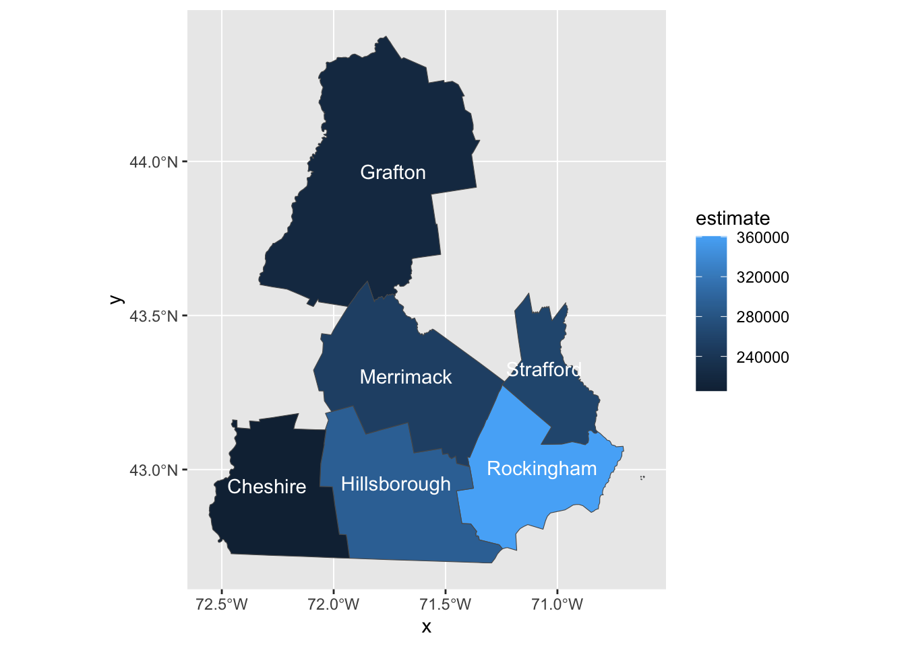

Chapter 4 Statistical Analysis
4.1 Time series
A central concept in time series analysis is autocorrelation. This is the correlation between \(y_t\) and its lagged value. For a lag of \(h\), this is the correlation between \(y_t\) and \(y_{t-h}\). Let’s first review correlation. For two vectors of data, \(x\) and \(y\), the correlation between the two is,
\[\begin{align} \text{cor}(x,y) &= \frac{\sum_i (x_i - \bar{x})(y_i - \bar{y})}{\sigma_x \sigma_y} \end{align}\]
set.seed(1)
n = 5
x = rnorm(n)
y = rnorm(n)
# correlation
sum((x - mean(x)) * (y - mean(y)) ) / ((n-1)*sd(x) * sd(y)) # 0.2789049
cor(x, y) # 0.2789049The autocorrelation takes this concept to a single time series. Autocorrelation, sometimes known as serial correlation in the discrete time case, is the correlation of a signal with a delayed copy of itself as a function of delay. The autocorrelation for a time series \(y\) at lag \(k\) is:
\[\begin{equation} r_k = \frac{ \sum_{t = k + 1}^{T} (y_t - \bar{y})(y_{t-k} - \bar{y}) }{\sum_{t=1}^T (y_t - \bar{y})^2 } \end{equation}\]
Here is a simple example of computing a lag 1 autocorrelation.
a = c(1,2,3,4,5)
a1 = c(1,2,3,4)
a2 = c(2,3,4,5)
# lag 1 autocorrelation
sum( (a1 - mean(a)) * (a2 - mean(a))) / (sum( (a - mean(a))^2 ) ) # by hand
(acf(a))This statistic can be found using the acf function. Let’s use the quantmod package to look at the acf of Google’s stock.
goog = getSymbols('GOOG', from='2020-10-07', to='2023-02-10',auto.assign = FALSE)
goog$diff = diff(goog$GOOG.Close)
plot(goog$diff)
acf(goog$diff[-1])4.2 Exercise
If your team’s data has a time component(s), explore the ACF of all time series variables as well as their differenced values. What does this tell you?
If your team doesn’t have time indexed data, find a different security from quandl and explore its ACF. How would you explain this? Also, look at the differenced value of the security’s close price and its ACF. Compute the lag 10 autocorrelation “by hand” and check using acf
4.3 Spatial Data
4.3.1 Polygon data - ACS
Autocorrelation (whether spatial or not) is a measure of similarity (correlation) between nearby observations. In the context of time series, autocorrelation measures the similarity of observations that are nearby in time. The concept of spatial autocorrelation is an extension of this. However, there are some complications. In time, there is only a single dimension to consider when considering the distance between observations. For spatial data, there are many possible ways in which observations may be nearby other observations. One way to measure spatial autocorrelation is a statistic called Moran’s I. To illustrate, I will use ACS data on median home values for counties in New Hampshire. Let us first obtain and visualize this data.
home_value <- get_acs(
geography = "county",
state = "NH",
variables = "B25077_001", # median home value
survey = "acs1",
year = 2019,
geometry = T
)
| county | num |
|---|---|
| Strafford | 1 |
| Rockingham | 2 |
| Grafton | 3 |
| Hillsborough | 4 |
| Cheshire | 5 |
| Merrimack | 6 |
The table above shows the mapping of counties to integers. The next step to take is to get a list of neighbors for each county. This is achieved with the function poly2nb (from the package spdep ). As an example, the neighbors of the first county are,
nb <- poly2nb(home_value, queen=F)
nb[[1]] # neighbors of county 1## [1] 2 6Next, we need to take these neighbors and give them weights (using the nb2listw function), then use these weights to compute the weighted average of neighbors for each country (using the lag.listw function). See example below,
lw <- nb2listw(nb, style="W")
inc.lag <- lag.listw(lw, home_value$estimate)moransi.df = data.frame(neighbors = inc.lag, observations = home_value$estimate)
ggplot(moransi.df, aes(x= observations, y = neighbors)) +
geom_point() +
geom_smooth(formula = y ~ x, method = "lm") +
ggtitle("Morans I plot")The Moran’s I is the slope of this regression line. In this case, -0.06. This can also be computed as,
lm(neighbors ~ observations, data = moransi.df) %>%
tidy() %>%
kable()| term | estimate | std.error | statistic | p.value |
|---|---|---|---|---|
| (Intercept) | 2.957523e+05 | 4.543672e+04 | 6.5091039 | 0.0028750 |
| observations | -6.096390e-02 | 1.680815e-01 | -0.3627043 | 0.7351786 |